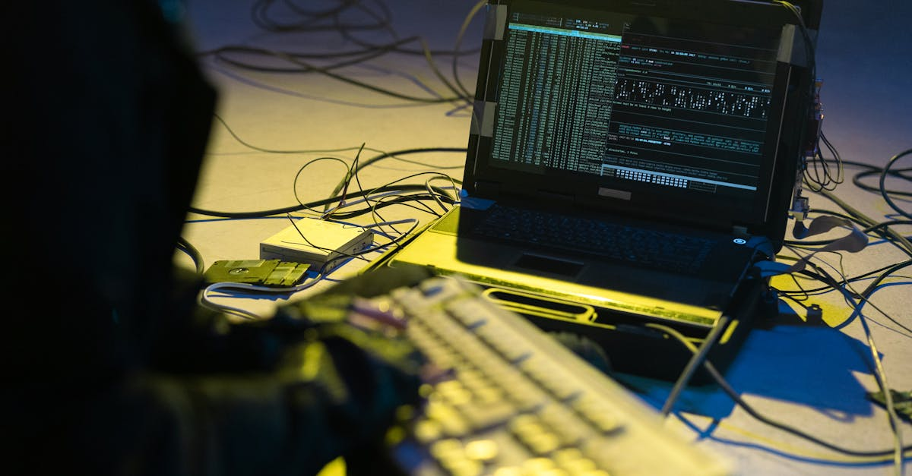
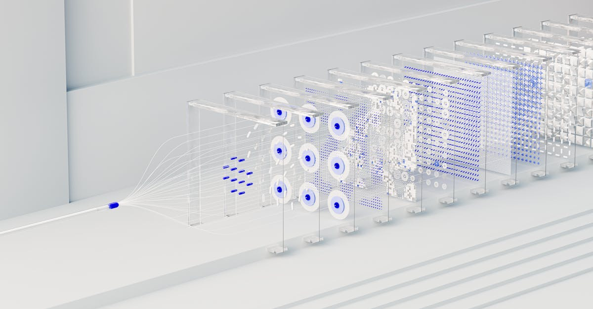

Inditex et la Réalité des Cybermenaces : Un Rappel à l'Ordre pour les Marchés
L'actualité récente a mis en lumière une vulnérabilité persistante et croissante dans le paysage numérique mondial : la fuite de données. Cette fois, c'est le géant de l'habillement, Inditex SA, propriétaire de marques emblématiques comme Zara, qui se retrouve sous les projecteurs suite à une brèche de sécurité chez l'un de ses prestataires externes. Bien que l'entreprise ait rapidement rassuré le public en affirmant que les dossiers des clients n'avaient pas été compromis, l'incident a permis à des intrus d'accéder à des informations cruciales concernant les relations commerciales du plus grand groupe de vêtements au monde. Cet événement, rapporté par Bloomberg Technology, n'est pas un cas isolé mais s'inscrit dans une tendance alarmante où les entreprises, quelle que soit leur taille ou leur secteur, sont constamment menacées par des cyberattaques de plus en plus sophistiquées. Pour les investisseurs, cette nouvelle est un rappel brutal de la nécessité d'intégrer les risques cyber dans toute analyse financière et stratégique.
Le communiqué d'Inditex, bien que rassurant quant à la sécurité des données clients, soulève des questions fondamentales sur la résilience des chaînes d'approvisionnement numériques et la dépendance des grandes entreprises vis-à-vis de leurs partenaires. L'accès à des informations sur les « relations commerciales » peut englober une multitude de données sensibles : stratégies de fournisseurs, négociations de prix, volumes d'achat, plans logistiques, et potentiellement des détails sur les innovations ou les collections futures. Ces informations, si elles tombent entre de mauvaises mains, peuvent être exploitées pour l'espionnage industriel, la manipulation de marché ou même le chantage. L'impact financier direct d'une telle fuite est souvent difficile à quantifier immédiatement, mais il peut se manifester par une perte de confiance des partenaires, une érosion de la réputation de la marque, et des coûts considérables liés à l'investigation, la remédiation et d'éventuelles sanctions réglementaires. Pour les marchés financiers, de telles annonces provoquent inévitablement une certaine nervosité, les investisseurs évaluant la capacité de l'entreprise à maîtriser la crise et à se prémunir contre de futures attaques. L'incident Inditex met en exergue la complexité croissante de la cybersécurité dans un monde hyperconnecté, où la sécurité d'une entreprise est intrinsèquement liée à celle de ses maillons les plus faibles.
Dans ce contexte, l'émergence de l'intelligence artificielle (IA) comme outil de défense devient non seulement pertinente mais indispensable. Alors que les menaces évoluent à une vitesse fulgurante, les méthodes de sécurité traditionnelles peinent à suivre le rythme. L'IA offre des capacités d'analyse prédictive, de détection d'anomalies en temps réel et d'automatisation des réponses qui peuvent transformer radicalement la posture de sécurité d'une organisation. Pour le secteur des cryptomonnaies, où la volatilité est exacerbée par la confiance et la sécurité des plateformes, les leçons de l'affaire Inditex sont d'autant plus cruciales. Une fuite de données, même mineure, peut déclencher une panique sur les marchés des actifs numériques, entraînant des liquidations massives et des pertes substantielles. C'est pourquoi les acteurs de l'IA crypto trading doivent non seulement se prémunir contre les risques internes mais aussi surveiller de près l'écosystème plus large des cybermenaces pour anticiper leurs répercussions potentielles sur la stabilité et la valeur des actifs numériques. L'incident Inditex n'est pas qu'une simple anecdote pour le monde de la mode ; c'est un signal d'alarme pour l'ensemble du système financier et technologique, soulignant l'impératif d'une cybersécurité proactive et intelligente.

La Vulnérabilité de la Chaîne d'Approvisionnement Numérique : Le Maillon Faible des Géants
L'affaire Inditex illustre parfaitement une problématique majeure et souvent sous-estimée dans le paysage de la cybersécurité moderne : la vulnérabilité intrinsèque de la chaîne d'approvisionnement numérique. Les grandes entreprises comme Inditex, avec leurs infrastructures robustes et leurs budgets de sécurité conséquents, sont paradoxalement souvent exposées par les failles de leurs partenaires et prestataires. Un réseau complexe de fournisseurs, de sous-traitants, de développeurs de logiciels et de prestataires de services cloud forme un écosystème où chaque entité est un maillon potentiel d'une chaîne de sécurité. Si un seul de ces maillons est faible, c'est l'ensemble de la forteresse qui est compromis. Dans le cas d'Inditex, l'accès à des informations sur les « relations commerciales » via un prestataire externe souligne que même les données non directement liées aux clients finaux peuvent avoir une valeur stratégique immense et présenter des risques significatifs.
La mondialisation et la numérisation ont conduit à une interconnexion sans précédent des entreprises. Les données circulent sans entraves entre les organisations, facilitant les opérations mais multipliant aussi les points d'entrée potentiels pour les cybercriminels. Un fournisseur de services informatiques, une agence marketing, un prestataire logistique ou même un cabinet de conseil externe peut détenir des informations sensibles ou avoir un accès privilégié aux systèmes d'une entreprise. Sécuriser ce périmètre étendu est un défi colossal. Il ne suffit plus de protéger ses propres serveurs ; il faut aussi auditer, surveiller et parfois même imposer des normes de sécurité rigoureuses à chaque partenaire. Cependant, la réalité est que de nombreux prestataires, en particulier les plus petits, n'ont pas les ressources ou l'expertise nécessaires pour maintenir un niveau de sécurité équivalent à celui des grandes corporations qu'ils servent. C'est cette asymétrie qui est exploitée par les acteurs malveillants.
Les implications de cette vulnérabilité s'étendent bien au-delà des pertes de données immédiates. Une brèche chez un prestataire peut entraîner une interruption des opérations, des litiges contractuels, une dégradation de la confiance et, à terme, une révision complète des stratégies d'externalisation. Pour les investisseurs, l'évaluation du risque cyber d'une entreprise doit désormais inclure une analyse approfondie de sa dépendance vis-à-vis de tiers et de la robustesse de sa gouvernance en matière de sécurité des fournisseurs. Dans le monde du trading de cryptomonnaies, où la nature décentralisée des protocoles est souvent mise en avant comme un gage de sécurité, il est crucial de ne pas ignorer que de nombreux points d'interaction (échanges, portefeuilles gérés, oracles) restent centralisés et dépendent de prestataires. Une faille chez un fournisseur de services cloud utilisé par une plateforme d'échange de cryptos, par exemple, pourrait avoir des conséquences catastrophiques sur la valeur des actifs et la confiance des utilisateurs. L'affaire Inditex est donc une piqûre de rappel universelle : la sécurité de l'information est une responsabilité partagée qui s'étend à l'ensemble de l'écosystème numérique, et l'évaluation de ce risque est primordiale pour toute décision d'investissement éclairée.
Impact sur la Confiance et la Réputation des Entreprises : Au-Delà des Pertes Financières Directes
Bien que l'incident d'Inditex n'ait pas directement compromis les données clients, la simple annonce d'une fuite chez un prestataire peut avoir des répercussions profondes et durables sur la confiance des marchés et la réputation de l'entreprise. Dans l'économie numérique actuelle, la confiance est une monnaie précieuse. Les consommateurs et les partenaires attendent des entreprises qu'elles protègent leurs informations avec le plus grand soin. Une brèche, même si elle est limitée aux données commerciales, érode cette confiance et peut susciter des doutes sur la capacité de l'entreprise à maîtriser ses risques cybernétiques globaux. Pour une marque comme Zara, dont la valeur est intrinsèquement liée à son image et à sa relation avec ses clients et fournisseurs, l'atteinte à la réputation peut être aussi dommageable, sinon plus, que les pertes financières directes.
L'impact sur la réputation se manifeste de plusieurs manières. Premièrement, une couverture médiatique négative peut ternir l'image de marque, entraînant une baisse de l'engagement des consommateurs ou une perception négative de l'entreprise. Deuxièmement, les partenaires commerciaux existants pourraient réévaluer la sécurité de leurs propres données lorsqu'elles sont partagées avec Inditex, ce qui pourrait compliquer les négociations futures ou même entraîner une perte de contrats. Troisièmement, les investisseurs, déjà sensibles aux risques ESG (Environnement, Social, Gouvernance), voient dans la gestion de la cybersécurité un indicateur clé de la bonne gouvernance d'entreprise. Une gestion laxiste ou une communication maladroite post-incident peut entraîner une révision à la baisse des évaluations boursières et une perte de confiance des actionnaires, même si les fondamentaux économiques de l'entreprise restent solides.
Les marchés financiers sont de plus en plus réactifs aux nouvelles de cyberattaques. L'effet immédiat sur le cours de l'action d'une entreprise peut être significatif, reflétant l'incertitude et la perception du risque accru. Au-delà de la réaction initiale, l'entreprise peut être confrontée à un examen réglementaire accru, à des enquêtes de la part des autorités de protection des données, et potentiellement à des amendes substantielles si des manquements sont avérés. Pour le secteur des cryptomonnaies, l'impact d'une fuite de données ou d'un incident de sécurité est souvent amplifié. La nature décentralisée et la rapidité des transactions sur les marchés crypto signifient que la confiance est primordiale. Une brèche chez une plateforme d'échange ou un fournisseur de services de portefeuille peut déclencher une panique, des retraits massifs et une chute vertigineuse des prix des actifs concernés. Les investisseurs en crypto sont particulièrement sensibles à la sécurité, ayant souvent été témoins de hacks majeurs par le passé. C'est pourquoi la capacité d'une plateforme ou d'un service crypto à protéger ses données et celles de ses utilisateurs est un facteur déterminant de son succès et de sa pérennité. L'affaire Inditex sert de rappel que, quelle que soit l'industrie, la protection des données est un pilier fondamental de la confiance et de la valeur à long terme.

Les Coûts Cachés des Cyberattaques et la Réponse Réglementaire : Une Facture Salée
L'affaire Inditex, bien que n'ayant pas directement affecté les données clients, met en lumière la complexité et la multiplicité des coûts associés à une cyberattaque, des coûts qui vont bien au-delà des pertes financières immédiates. Ces « coûts cachés » peuvent s'avérer extrêmement onéreux et avoir un impact prolongé sur la santé financière et opérationnelle d'une entreprise. Le premier poste de dépense significatif est souvent lié à l'investigation forensique. Engager des experts en cybersécurité pour identifier la source de la brèche, évaluer l'étendue des dommages et comprendre comment prévenir de futures attaques est un processus coûteux et chronophage. Ces investigations peuvent durer des semaines, voire des mois, immobilisant des ressources internes et externes importantes.
Ensuite, viennent les frais juridiques et réglementaires. Même si les données clients ne sont pas directement compromises, la brèche peut entraîner des litiges avec les partenaires dont les données commerciales ont été exposées. De plus, les régulateurs, comme ceux en charge du RGPD en Europe, peuvent ouvrir des enquêtes pour déterminer si l'entreprise a respecté ses obligations en matière de protection des données et de sécurité. Les amendes pour non-conformité peuvent atteindre des sommes colossales, représentant un pourcentage significatif du chiffre d'affaires mondial de l'entreprise. Les coûts de notification des parties affectées, même si ce ne sont pas des clients finaux, peuvent également être substantiels, sans parler des dépenses liées à la mise en place de mesures correctives et au renforcement des systèmes de sécurité.
Au-delà de ces coûts directs, il y a l'impact sur les primes d'assurance cyber. Les entreprises ayant subi une brèche voient souvent leurs primes augmenter considérablement, reflétant un risque accru perçu par les assureurs. La perte de propriété intellectuelle ou de secrets commerciaux, même si elle est difficile à chiffrer, peut avoir un impact dévastateur sur la compétitivité et l'innovation à long terme. La réponse réglementaire, quant à elle, ne cesse de se durcir. Les législateurs du monde entier reconnaissent l'urgence de protéger les données et imposent des cadres de plus en plus stricts, comme le RGPD, le CCPA ou d'autres lois nationales. Ces réglementations obligent les entreprises à adopter des standards de sécurité plus élevés, à signaler rapidement les incidents et à être transparentes sur leurs vulnérabilités. Ne pas respecter ces exigences peut entraîner non seulement des sanctions financières mais aussi une atteinte irréparable à la réputation.
Pour le domaine de l'investissement, et plus particulièrement le trading de cryptomonnaies, ces coûts cachés et cette pression réglementaire sont des facteurs de risque majeurs. Les plateformes crypto, souvent perçues comme des cibles de choix pour les cybercriminels en raison de la nature des actifs qu'elles détiennent, sont soumises à une vigilance accrue. Une fuite de données, un hack ou une non-conformité réglementaire peut entraîner des pertes massives, non seulement en termes de fonds volés, mais aussi en termes de frais de récupération, d'amendes et de perte de parts de marché. Les investisseurs qui utilisent des agents IA pour le trading de cryptos doivent s'assurer que ces solutions intègrent des mécanismes de sécurité robustes et une compréhension approfondie de ces risques pour protéger leurs capitaux. L'affaire Inditex nous rappelle que la facture d'une cyberattaque peut être bien plus salée que ce que l'on imagine au premier abord, et qu'une approche proactive est la seule voie viable.
L'Intelligence Artificielle comme Bouclier : Prévention et Détection des Cyberattaques
Face à la complexité croissante des cybermenaces, comme celle qu'a rencontrée Inditex, l'intelligence artificielle (IA) n'est plus une simple innovation mais une nécessité impérative pour la cybersécurité. Les méthodes de défense traditionnelles, basées sur des signatures connues et des règles statiques, sont rapidement dépassées par des attaquants qui utilisent eux-mêmes des techniques sophistiquées, voire de l'IA. L'IA, en revanche, offre une capacité sans précédent à analyser d'énormes volumes de données, à identifier des schémas anormaux et à prédire des attaques avant qu'elles ne se matérialisent pleinement. C'est un changement de paradigme, passant d'une défense réactive à une posture proactive et prédictive.
Les systèmes basés sur l'IA peuvent surveiller en permanence les réseaux, les terminaux et les applications pour détecter les comportements suspects. Par exemple, un algorithme d'apprentissage automatique peut être entraîné sur des millions de points de données pour reconnaître ce qu'est un trafic réseau « normal » pour une entreprise. Toute déviation, même subtile, comme un accès inhabituel à un serveur par un utilisateur à une heure atypique, peut être signalée comme une anomalie potentiellement malveillante. Cette capacité à identifier des menaces « zero-day » – des vulnérabilités inconnues et non patchées – est particulièrement précieuse. De plus, l'IA peut automatiser la réponse aux incidents, réduisant considérablement le temps entre la détection d'une attaque et sa neutralisation. Cela peut inclure l'isolation automatique de systèmes compromis, le blocage d'adresses IP malveillantes ou le déclenchement d'alertes aux équipes de sécurité.
Au-delà de la détection, l'IA excelle dans la prévention. En analysant les tendances des cyberattaques passées, les vulnérabilités connues et les configurations réseau, l'IA peut identifier les points faibles potentiels d'un système avant qu'ils ne soient exploités. Elle peut par exemple suggérer des améliorations de configuration, des patchs de sécurité à appliquer en priorité, ou même simuler des attaques pour tester la résilience des défenses (techniques de red teaming automatisées). Les entreprises peuvent ainsi renforcer leurs défenses de manière proactive, réduisant la surface d'attaque et minimisant les risques de fuites de données comme celle d'Inditex. L'intégration de l'IA dans la sécurité des fournisseurs tiers, le maillon faible souvent exposé, est également cruciale. Des outils basés sur l'IA peuvent évaluer en continu le profil de risque cyber des partenaires et alerter l'entreprise en cas de détérioration de leur posture de sécurité.
Pour le secteur de l'investissement et du trading de cryptomonnaies, l'adoption de l'IA pour la cybersécurité est d'une importance capitale. Les plateformes de trading, les portefeuilles numériques et les infrastructures blockchain sont des cibles lucratives pour les cybercriminels. Un agent IA qui trade les cryptos pour vous doit non seulement être performant dans ses algorithmes de trading, mais aussi être intrinsèquement sécurisé. Cela implique l'utilisation de l'IA pour protéger l'agent lui-même contre les intrusions, mais aussi pour surveiller l'environnement de marché. Une fuite de données majeure affectant une grande plateforme pourrait entraîner une volatilité extrême, et un agent IA doté de capacités de détection d'anomalies pourrait potentiellement réagir plus rapidement pour protéger les actifs, par exemple en ajustant les positions ou en retirant des fonds vers des portefeuilles plus sûrs. L'IA est le bouclier indispensable de l'ère numérique, offrant une couche de défense intelligente et adaptative contre des menaces toujours plus insidieuses.

L'IA dans le Trading Crypto : Gérer le Risque Cyber et la Volatilité des Marchés
L'incident d'Inditex nous rappelle avec force que la sécurité des données est un enjeu transversal, dont les répercussions peuvent se faire sentir bien au-delà du secteur d'origine. Pour les marchés des cryptomonnaies, caractérisés par une volatilité intrinsèque et une sensibilité accrue aux nouvelles de sécurité, les leçons de cette brèche sont particulièrement pertinentes. Un agent IA qui trade les cryptos pour vous, 24h/24, doit être conçu non seulement pour maximiser les rendements mais aussi pour naviguer dans un environnement de risque cyber élevé. L'intégration de l'intelligence artificielle dans le trading de cryptomonnaies offre des capacités uniques pour gérer ces risques et exploiter les opportunités même dans des conditions de marché incertaines.
Premièrement, la sécurité de l'agent IA lui-même est primordiale. Tout comme Inditex doit protéger ses systèmes et ceux de ses prestataires, un agent IA de trading doit être protégé contre les tentatives de piratage qui pourraient manipuler ses algorithmes, détourner des fonds ou compromettre les clés privées. Cela implique l'utilisation de techniques de cybersécurité avancées, y compris l'IA pour la détection d'intrusions et la surveillance des anomalies de comportement de l'agent lui-même. Une fuite de données ou une compromission d'un agent IA pourrait avoir des conséquences dévastatrices pour les investisseurs qui lui confient leurs capitaux. Les fournisseurs de solutions d'IA de trading doivent donc investir massivement dans la sécurisation de leurs infrastructures et de leurs algorithmes.
Deuxièmement, l'IA peut jouer un rôle crucial dans l'analyse de l'impact des événements de cybersécurité sur les marchés crypto. Une brèche majeure chez une entreprise comme Inditex, ou plus directement chez une grande plateforme d'échange de cryptomonnaies, peut provoquer une réaction en chaîne. Les agents IA peuvent être entraînés à analyser le sentiment du marché à partir de nouvelles, de médias sociaux et d'autres sources d'information en temps réel. En identifiant rapidement une panique potentielle ou un changement de sentiment lié à un incident de sécurité, l'IA peut ajuster les stratégies de trading de manière proactive. Cela peut signifier la clôture rapide de positions risquées, le déplacement de fonds vers des actifs plus stables ou la prise de positions courtes pour profiter de la baisse, minimisant ainsi les pertes ou même générant des profits dans un marché baissier.
Enfin, la capacité de l'IA à opérer 24h/24 est un avantage décisif dans un marché crypto qui ne dort jamais. Les incidents de sécurité peuvent survenir à tout moment, et une réaction humaine est souvent trop lente pour les marchés à haute fréquence. Un agent IA peut surveiller en permanence les événements de sécurité mondiaux, les vulnérabilités de smart contracts, les mouvements de fonds suspects et les annonces réglementaires, et exécuter des trades instantanément pour protéger le capital ou capitaliser sur la volatilité induite par ces événements. Cette agilité est d'autant plus importante que les cyberattaques deviennent plus fréquentes et sophistiquées. L'IA dans le trading crypto n'est donc pas seulement un outil d'optimisation des rendements, mais aussi une ligne de défense essentielle contre les risques cyber et une aide précieuse pour naviguer dans l'incertitude des marchés post-incidents.
Renforcer la Résilience : Stratégies Proactives pour un Avenir Numérique Sécurisé
L'incident d'Inditex est un puissant catalyseur pour réévaluer et renforcer la résilience des entreprises face aux cybermenaces. Il met en évidence la nécessité d'adopter des stratégies proactives et holistiques en matière de cybersécurité, qui vont au-delà de la simple conformité réglementaire. Dans un monde où les données sont le nouvel or, et où les cybercriminels affinent constamment leurs techniques, la passivité n'est plus une option viable. La résilience ne consiste pas seulement à prévenir les attaques, mais aussi à savoir comment réagir, se remettre et apprendre d'un incident lorsqu'il survient, ce qui est inévitable pour la plupart des organisations à un moment donné.
Une stratégie proactive commence par une évaluation continue des risques. Cela inclut non seulement l'audit de ses propres systèmes, mais aussi une diligence raisonnable approfondie et une surveillance constante des partenaires de la chaîne d'approvisionnement numérique. Les entreprises doivent exiger des normes de sécurité élevées de leurs fournisseurs et mettre en place des clauses contractuelles strictes en cas de violation. L'implémentation de cadres de cybersécurité reconnus (comme NIST, ISO 27001) et la réalisation régulière de tests d'intrusion et d'exercices de simulation d'attaques (red teaming) sont également essentielles pour identifier et corriger les vulnérabilités avant qu'elles ne soient exploitées.
Deuxièmement, l'investissement dans la technologie et les compétences est crucial. Cela signifie non seulement l'acquisition de solutions de sécurité de pointe, mais aussi la formation continue des employés à tous les niveaux. La sensibilisation à la cybersécurité est la première ligne de défense, car l'erreur humaine reste un facteur majeur dans de nombreuses brèches. L'adoption de technologies émergentes comme l'IA pour la détection et la prévention des menaces, comme discuté précédemment, est un impératif pour rester en avance sur les attaquants. Les entreprises doivent également développer des plans de réponse aux incidents clairs et testés, afin de minimiser l'impact d'une attaque et d'accélérer la récupération.
Enfin, la collaboration et le partage d'informations sont des piliers de la résilience collective. Les entreprises ne peuvent pas combattre seules les cybercriminels. Le partage d'informations sur les menaces, les vulnérabilités et les meilleures pratiques au sein des industries et avec les agences gouvernementales peut renforcer la défense de l'ensemble de l'écosystème. Pour le secteur de l'investissement, et en particulier le trading de cryptomonnaies, ces stratégies proactives sont d'une importance capitale. La nature interconnectée et la rapidité des marchés crypto signifient qu'une faille de sécurité dans un maillon peut avoir des répercussions systémiques. Les acteurs du marché doivent non seulement sécuriser leurs propres opérations, mais aussi contribuer à un écosystème plus sûr par le partage de connaissances et l'adoption de standards élevés. L'avenir numérique dépendra de notre capacité collective à anticiper, à nous défendre et à nous adapter aux menaces toujours plus sophistiquées. L'expérience d'Inditex est un appel à l'action pour tous.
Conclusion : Les Leçons d'Inditex et l'Impératif de l'IA dans la Sécurité et l'Investissement Crypto
L'affaire Inditex, bien qu'ayant limité l'impact direct sur les données clients, résonne comme un puissant avertissement pour l'ensemble du monde économique et financier. Elle souligne avec acuité la fragilité inhérente aux chaînes d'approvisionnement numériques et la persistance des risques cybernétiques, même pour les géants de l'industrie. L'accès non autorisé à des informations sur les « relations commerciales » d'une entreprise de cette envergure peut avoir des conséquences profondes et insidieuses, affectant la réputation, la confiance des partenaires, et générant des coûts cachés considérables qui vont bien au-delà des pertes financières immédiates. Cet incident n'est pas un cas isolé, mais s'inscrit dans une tendance où les cyberattaques sont de plus en plus fréquentes, sophistiquées et ciblées, rendant les défenses traditionnelles souvent obsolètes.
Les marchés financiers, et en particulier le secteur volatil des cryptomonnaies, sont particulièrement sensibles à ces risques. Une brèche de sécurité, qu'elle touche directement une plateforme crypto ou une entreprise d'envergure mondiale, peut déclencher des mouvements de marché imprévisibles et amplifier la volatilité. Pour les investisseurs, la capacité d'une entreprise à protéger ses données et à gérer les risques cyber est devenue un critère essentiel d'évaluation. La transparence, la réactivité et la robustesse des mesures de sécurité sont désormais des indicateurs clés de la bonne gouvernance et de la résilience à long terme.
Dans ce contexte, l'intelligence artificielle émerge non pas comme une simple option, mais comme une nécessité stratégique. L'IA offre des capacités inégalées pour la détection précoce des menaces, l'analyse prédictive des vulnérabilités et l'automatisation des réponses aux incidents, transformant ainsi la cybersécurité d'une approche réactive à une posture proactive et intelligente. Pour le domaine spécifique du trading de cryptomonnaies, où la rapidité et la précision sont primordiales, un agent IA qui trade les cryptos pour vous 24h/24 doit intégrer ces capacités de cybersécurité avancées. Il doit non seulement être intrinsèquement sécurisé, mais aussi capable d'analyser l'impact des événements de sécurité mondiaux sur les marchés crypto, ajustant les stratégies de trading en temps réel pour protéger les capitaux et exploiter les opportunités même dans l'incertitude.
En définitive, l'affaire Inditex est un puissant rappel que la sécurité numérique est une responsabilité partagée et un défi en constante évolution. Pour les entreprises et les investisseurs, l'adoption de l'IA n'est plus seulement une question d'efficacité ou d'optimisation des rendements, mais une condition essentielle pour la survie et la prospérité dans un paysage numérique de plus en plus hostile. Renforcer la résilience par des stratégies proactives, des investissements technologiques judicieux et une vigilance constante est le seul chemin vers un avenir numérique sécurisé et prospère, où l'IA joue un rôle central dans la protection de nos actifs les plus précieux.